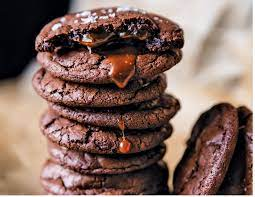

**Double Çikolatalı Cookies**
Tarif:
Kübra ÇELEBİ
Kaç Kişilik: 2-3
Hazırlama Süresi: 10 dk
Pişirme Süresi: 10-12 dk
Malzemeler:
- 1 adet yumurta
- Yarım su bardağı + 1 yemek kaşığı şeker
- 100 gr tereyağ veya margarin
- 2 tatlı kaşığı pekmez
- 1 çay kaşığı karbonat
- Yarım çay kaşığı tuz
- 1 paket vanilya
- 1 yemek kaşığı nişasta
- Yaklaşık 1.5 su bardağı un
- 1 çay bardağı damla çikolata
Yapılışı:
- Yumurta, tereyağ, şeker ve pekmezi iyice karıştıralım.
- Damla çikolata hariç tüm malzemeleri ekleyelim ve yoğuralım.
- En son damla çikolataları da ekleyelim, üzerini streçleyip dolapta 15 dk bekletelim.
- Daha sonra ceviz büyüklüğünde parçalar alıp yuvarlayıp bastıralım.
- İçerisine 1 tatlı kaşığı kadar sürülebilir çikolata ekleyip kapatalım.
- Yağlı kağıt serdiğimiz fırın tepsisine aktaralım.
- 190° de 10-12 dk pişirelim.
- Pişirdikten sonra ilk sıcaklığında iken hemen çay bardağı ile üzerine hafif bastıralım.
- İlk sıcaklığı geçtikten sonra servis edebilirsiniz.
Afiyet Olsun.